Achievement - Unrivaled Power
Obtain the ultimate armor.
This achievement is a large trading sequence that awards the best armor in the game. This is a guide on how to obtain it.
Note that you can only obtain one set, even if you manage to get multiples of the components required.
Requirements
Three's Company, Scary Dragon (Story Time, Little Bear), Secrets of the Forest (The Blossoms Never Wither, Personal Trainer), 2000 G-Coins, Dragon Hide, Avatar Heart
Getting Started
| 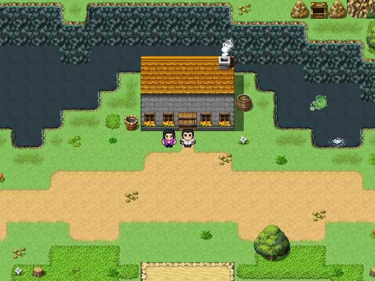 | 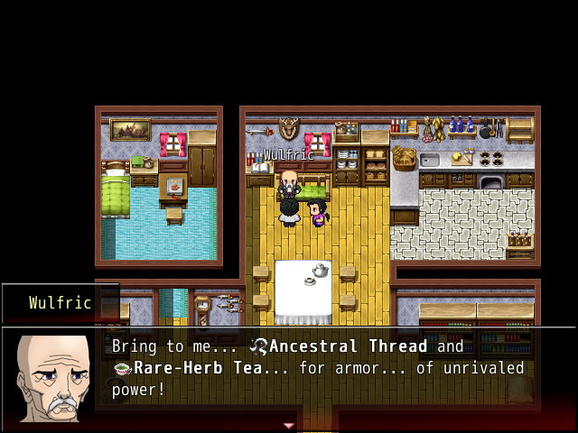 |
Bring the Dragon Hide you obtained from defeating the Young Dragon during Scary Dragon and head to South Iris Path. If you sold your Dragon Hide, you can obtain more by doing Dive Battles. Talk to Wulfric and he will take your Dragon Hide and ask you to bring him Ancestral Thread and Rare-Herb Tea so he can create the Dragon Armor.
Getting the Ancestral Thread - The Strange Token
| 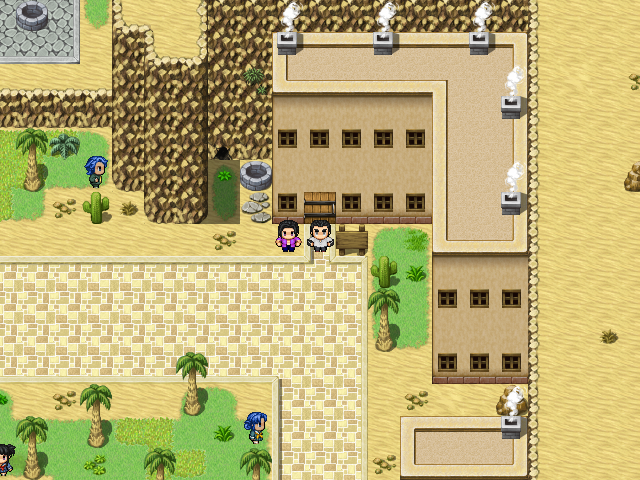 | 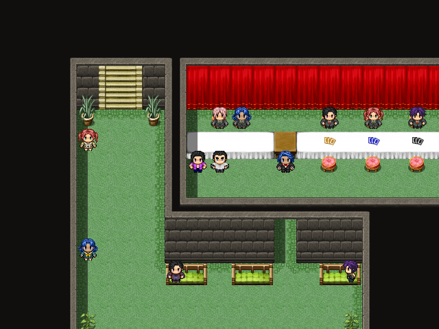 |
Head to the Solem Apartments in Solem and go downstairs to the Solem Game Room. You will need to buy the Strange Token from the G-Coin Shop (Perennia Girl) for 2000 G-Coins (or 200,000 Gold if you don't want to play the games).
Conspiracy Theory - Trading for the Skeleton Key
| 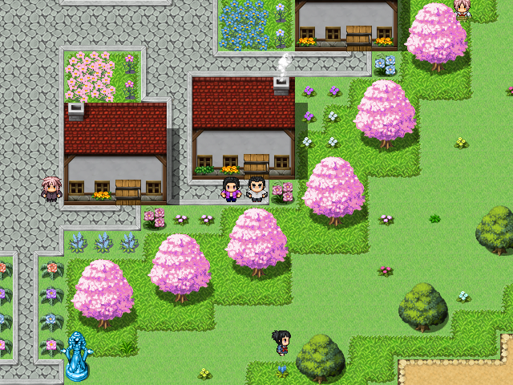 | 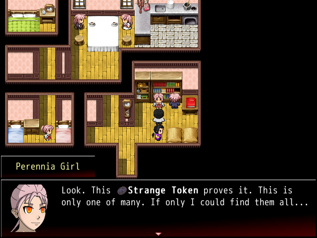 |
Head to Perennia and enter the house shown above. Talk to the Perennia Girl and she will trade you a Skeleton Key for your Strange Token.
Contraband - Trading for the Gold Watch
| 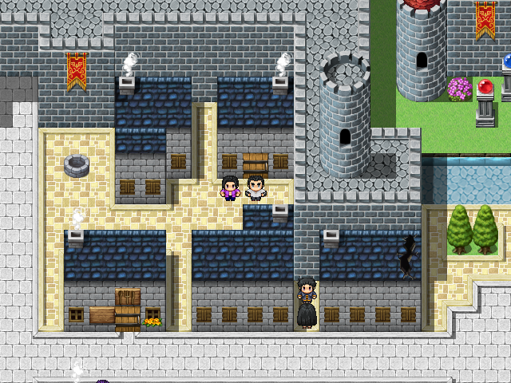 | 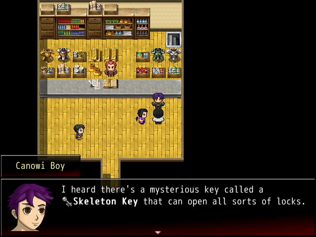 |
Head to Eria and enter the Black Market, shown above. Talk to the Canowi Boy and he will give you a Gold Watch for the Skeleton Key.
Hunting Time - Trading for the Ultra-Rare Meat
| 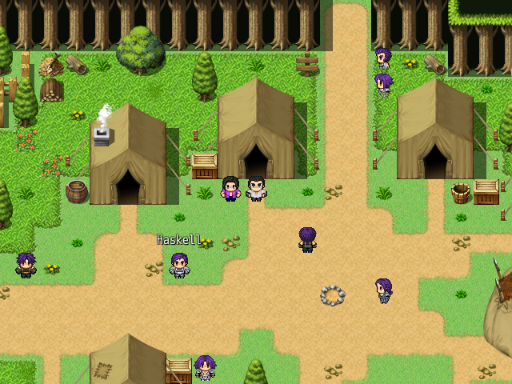 | 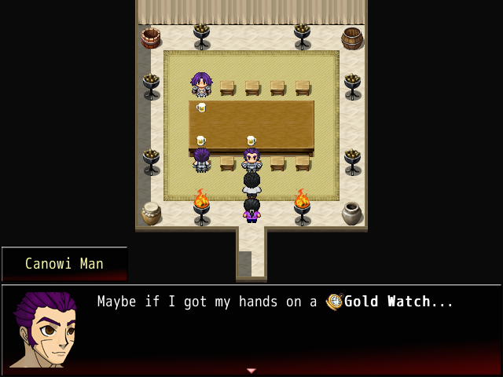 |
Head to Canowi and enter the tent shown above. Talk to the Canowi Man and he will give you the Ultra-Rare Meat for the Gold Watch.
The Ultimate Ramen - Trading for the Goldsteel Bar
| 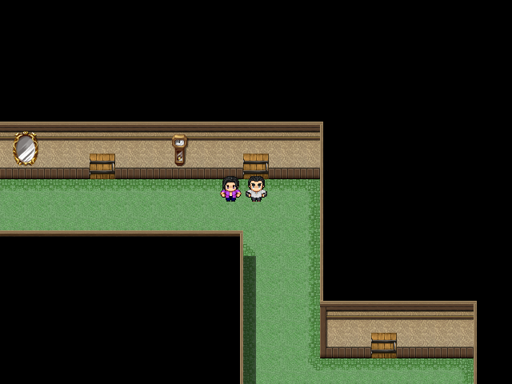 | 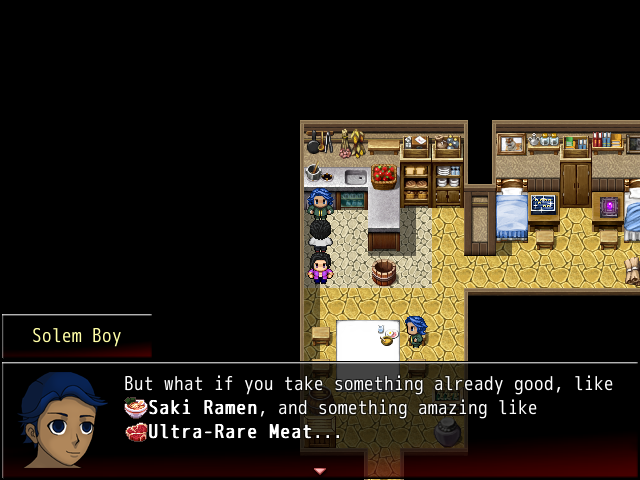 |
Head to the Solem Apartments in Solem and go upstairs. Enter the apartment shown above. Talk to the Solem Boy and he will trade you his Goldsteel Bar for your Ultra-Rare Meat.
Notice me, Guildmaster - Trading for the Ornate Blade
| 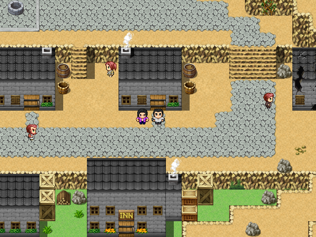 | 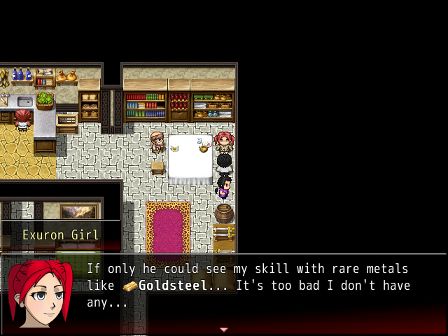 |
Head to Exuron and enter the house shown above. Talk to the Exuron Girl and she will make you an Ornate Blade out of the Goldsteel Bar.
Standing Out - Obtaining the Ancestral Thread
| 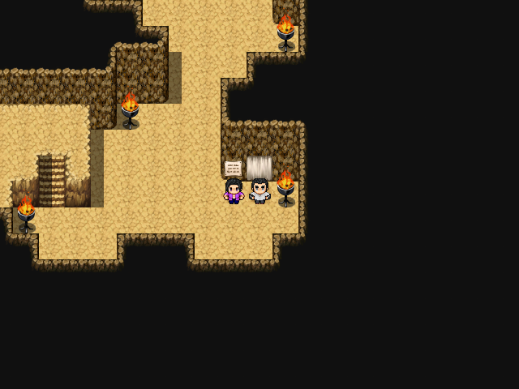 | 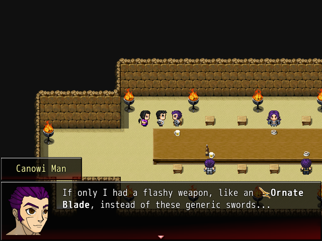 |
Head to Canowi Inner and enter the compound. Enter the Longhall as shown above and talk to the Canowi Man. He will trade you the Ancestral Thread for the Ornate Blade.
Getting the Rare-Herb Tea - The Hangover Potion
| 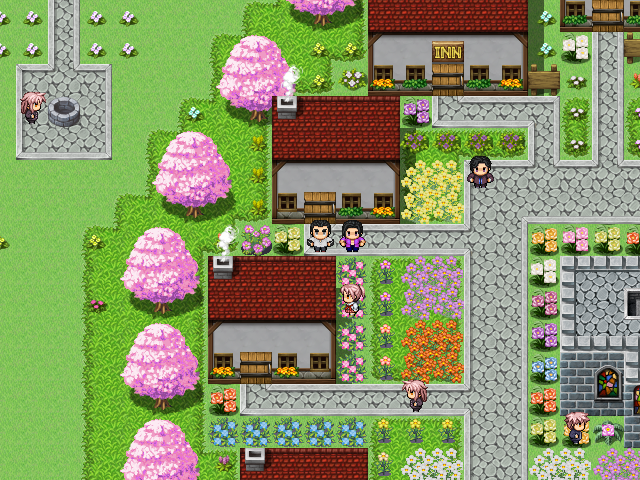 | 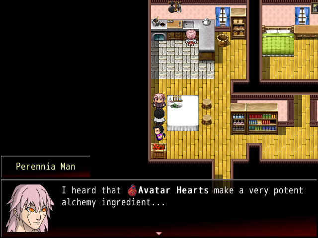 |
Head to Perennia and enter the house shown above. Talk to the Perennia Man and he will give you a Hangover Potion for an Avatar Heart. If you sold all of your Avatar Hearts, you will have obtain more by doing Dive Battles.
Savior - Trading for the Rapier
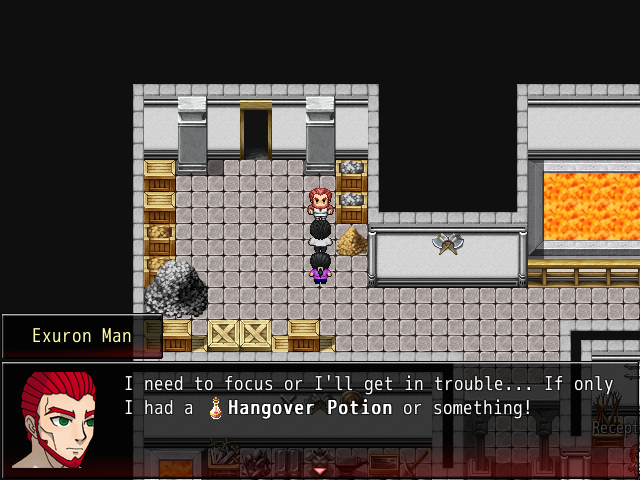Head to Blacksmiths' Guild in Exuron and find the man shown above. Talk to him and he will give you a Rapier for the Hangover Potion.
New Fighting Style - Trading for the Blue Lobster
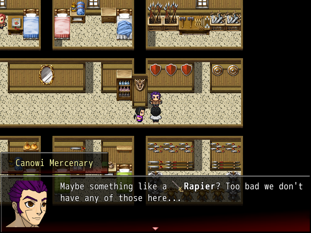Head to Mercenaries' Guild on West Iris Path and find the mercenary on the second floor, shown above. Talk to him and he will give you a Blue Lobster for the Rapier.
Rare Pet - Trading for the Antique Fan
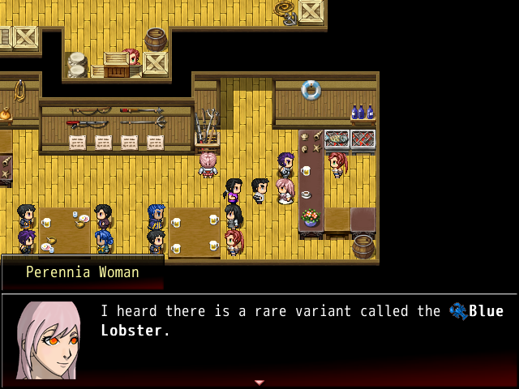Head to Fishermen's Guild in Saki and find the woman shown above. Talk to her and she will trade you an Antique Fan for the Blue Lobster.
Collector's Item - Obtaining the Rare-Herb Tea
| 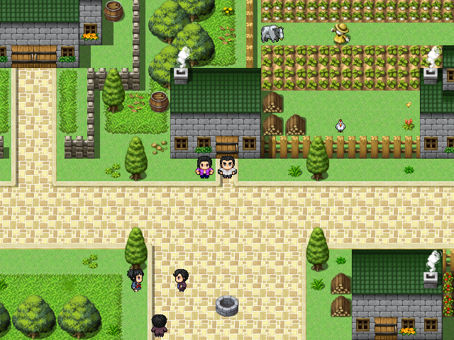 | 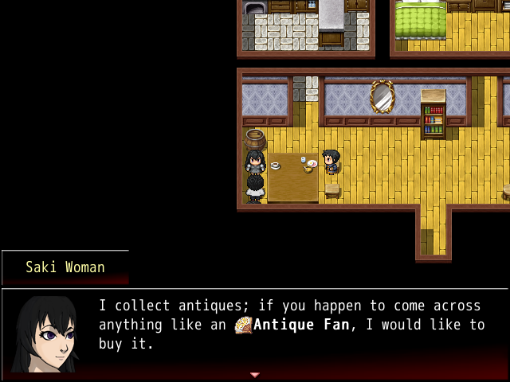 |
Head to Saki and enter the house shown above. Talk to the Saki Woman and she will give you the Rare-Herb Tea for your Antique Fan.
Finishing Up - Obtaining the Dragon Armor
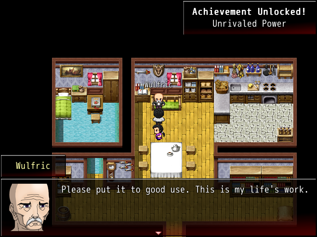Return to Wulfric now that you have both the Ancestral Thread and Rare-Herb Tea. He will take them both and create the powerful Dragon Armor! It grants immunity to all negative status effects and has great stats!